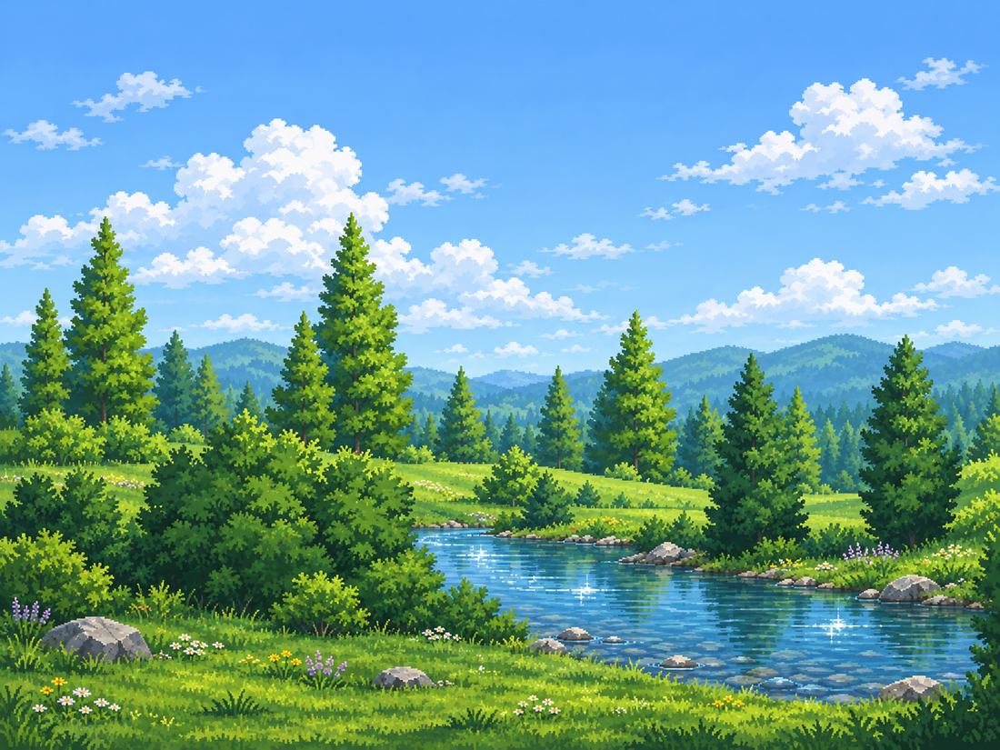
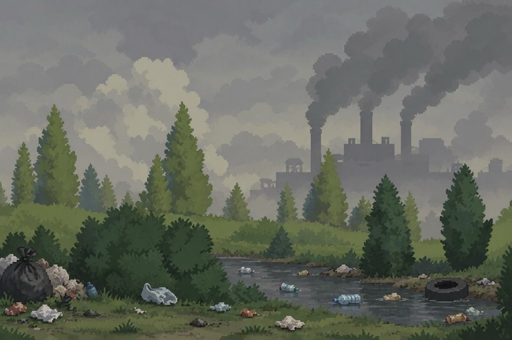

Listen to a living world.
Preparing your journey…
Terra uses included natural female narration. Mission signals use illustrative values from the Terra-Tone world-map model. Voice commands are available from Voice control.